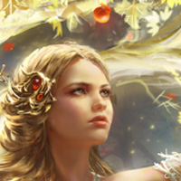

Auriel, The Eternal Blossom
Goddess of the Life Domain
Auriel, The Eternal Blossom, is a revered deity in the pantheon of Celestia, known as the goddess of life. She is believed to be the daughter of Raijin, the god of storms, and Elara, the goddess of nature. Auriel is often depicted as a radiant and ethereal figure, surrounded by blooming flowers and vibrant greenery, symbolizing the abundance and vitality of life.
As the goddess of life, Auriel is revered as the one who grants and sustains life in all its forms. She is seen as the embodiment of renewal, fertility, and growth, and is believed to have the power to heal and restore. Her followers, known as the Eternal Blossom's Disciples, are deeply devoted to her teachings and strive to emulate her nurturing and life-giving qualities.
The Eternal Blossom's Disciples are known for their deep reverence for all living beings and the natural world. They believe that all life is sacred and should be protected and cherished. They are often involved in acts of healing, tending to the sick and wounded, and promoting the growth and preservation of the natural world. They are also known to be advocates of peace and harmony, seeking to resolve conflicts and promote understanding among different factions within Celestia.
The followers of Auriel are known for their close connection with nature and often engage in rituals and ceremonies that celebrate the cycles of life, such as the changing of seasons and the birth of new life. They are also known for their herbalism and knowledge of natural remedies, using their skills to heal and restore balance to those in need.
Auriel's followers do not engage in forbidden magics. They believe that the power of life is sacred and should not be tampered with or manipulated through arcane means. Instead, they rely on their deep connection with nature and the blessings of Auriel to bring about healing, restoration, and renewal.
Auriel's influence is pervasive in all aspects of life in Celestia, from the fields of agriculture and medicine to the realms of spirituality and philosophy. Her followers are respected and trusted for their wisdom, compassion, and reverence for life, and her teachings shape the beliefs and values of the Eternal Blossom's Disciples, who strive to embody her essence of eternal life and vitality in their everyday actions.